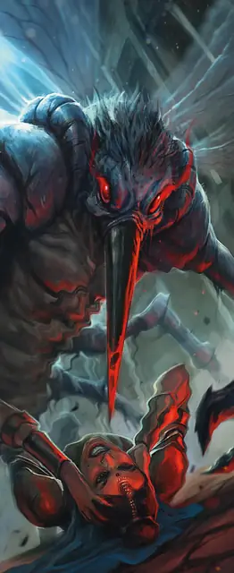

Чазм
Chasme
Большое Исчадие (Демон), Хаотичное Злое

Класс Защиты 15 Инициатива +5 (15)
Хиты 78 (12к10 + 12)
Скорость 20 футов, Полёта 60 футов
| мод | спас | ||
|---|---|---|---|
| СИЛ | 15 | +2 | +2 |
| ЛОВ | 15 | +2 | +5 |
| ТЕЛ | 12 | +1 | +1 |
| мод | спас | ||
|---|---|---|---|
| ИНТ | 11 | +0 | +0 |
| МДР | 14 | +2 | +5 |
| ХАР | 10 | +0 | +0 |
Сопротивление урону Огонь, Холод, Электричество
Иммунитеты Яд; Отравленный
Чувства Тёмное зрение 120 футов, пассивное Восприятие 15, Слепое зрение 10 футов
Языки Бездны, Телепатия 120 фт.
Опасность 6 (2 300 опыта; БВ +3)
Особенности
Восстановление демона. Когда чазм умирает за пределами Бездны, его тело растворяется в ихоре и в тот же миг заново возрождается со всеми Хитами где-то в Бездне.
Сопротивление магии. Чазм совершает с Преимуществом спасброски от заклинаний и прочих магических эффектов.
Паучье лазание. Чазм может лазать по сложным поверхностям, включая потолки, без совершения проверок характеристик.
Действия
Хоботок. Бросок рукопашной атаки: +5, досягаемость 5 фт. Попадание: 16 (4к6 + 2) Колющего урона плюс 21 (6к6) Некротического урона. Если цель — существо, её максимум Хитов снижается на число, равное полученному Некротическому урону.
Бонусные действия
Гул. Спасбросок Телосложения: Сл 12, каждое существо в 30-футовой Эманации, исходящей от чазма (демоны преуспевают в этом спасброске автоматически). Провал: Цель становится Бессознательной и повторяет спасбросок в конце каждого своего хода. Цель преуспевает автоматически спустя 10 минут либо если получает урон или существо в пределах 5 футов от неё действием опорожнит флягу Святой воды на неё. Успех: Цель становится невосприимчива к Гулу этого чазма на 24 часа.
Бонус мастерства +3
Среда обитания Бездна
Сокровища Реликварные
Чазм
Демон предательства и лицемерия
Вылетая из Бездны, чазмы напоминают мух размером с лошадь. Они выводят врагов из строя оглушающим, сводящим с ума гулом жужжания, а затем с помощью хоботков высасывают из них жизненные силы. В самой Бездне большинство чазмов раболепно служат более могущественным демонам и выискивают пленников, которых можно влить в ряды демонических орд.